Building a hyperlocal marketplace for handmade ceramics at Handmud
Connecting independent local ceramic artists with interested art enthusiasts in their own city. And opening up a portal to one of a kind ceramic objects, being made behind doors of ceramics studios all over the city.
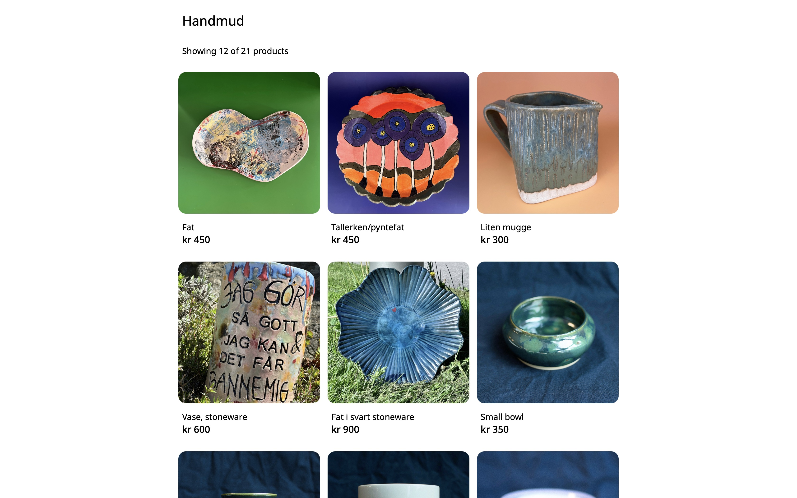
The project in brief:
Context
Independent artists who make just a few objects a month, do not have a place to sell them. Established design stores expect frequent supply while platforms such as Etsy or Amazon take a substantial cut. Platforms such as Finn (in Norway) make it easy to sell items, but do not provide an artistic curated experience.
Enthusiasts of handmade crafts do not have a platform to see a variety of unique, one of a kind hand crafted ceramics, by local artists in their city. They are limited to weekend ceramics markets.
My role
I am the founder of Handmud. And as a founder, I am responsible for design, experience, front end code, marketing and support. While my business partner is responsible for the back end code and database.
It is a small company of two, with an ambition to create a beautiful, thriving community of ceramic artists, so we have to wear multiple hats.
Understanding user needs and primary ideation:
Background
As a ceramics artist, I wanted to make a personal webshop. In conversations with other artists in the studio, I realised multiple other artists also want a website, but find it daunting to make their own websites, even on platforms such as Shopify.
I saw an opportunity to make a platform, where everyone can have their own mini websites.
Sketching initial ideas
A series of user interviews, involving both potential artists and customers, was conducted.
The result was condensed in the following paper sketches. These sketches validated the initial idea.
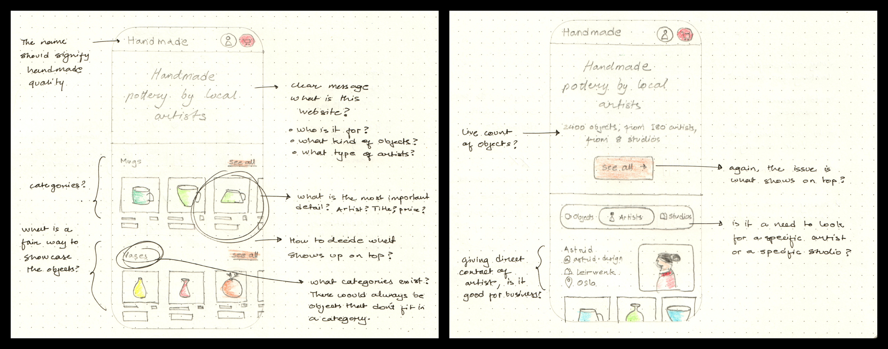
Homepage
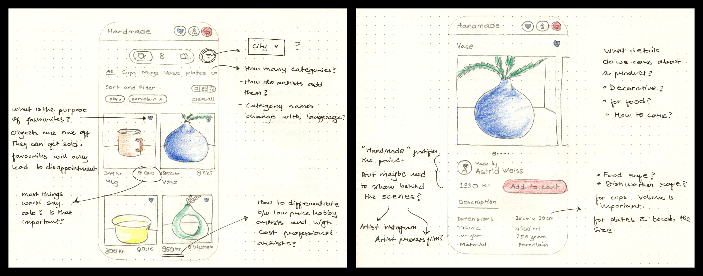
Object list and object details
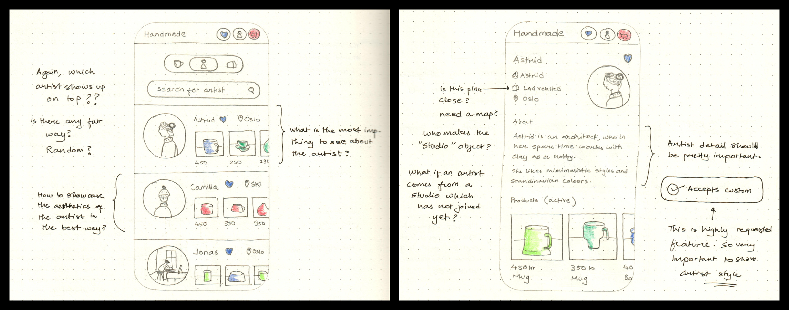
Artist list and artist details
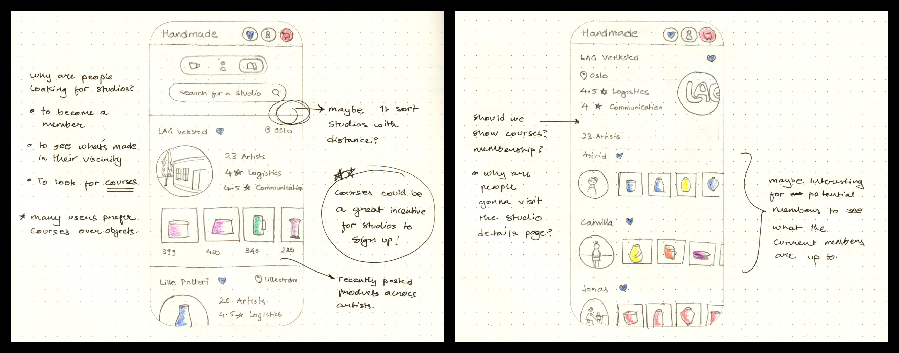
Studio list and studio details
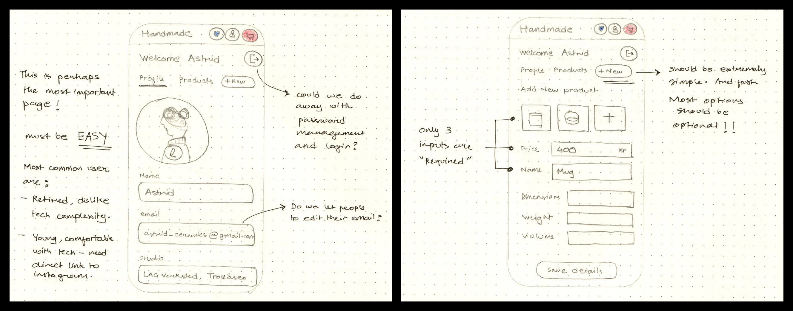
Artist profile and upload products
Validating user expectations through interactive prototypes:
Getting users onboard
The next step was to show end users what the platform might look like.
This was important to both validate the concept and get potential users to feel involved in the design process.
Leveraging AI for quick prototyping
Ceramic artists in the studio expressed the need to see polished prototypes. Instead of spending a long time perfecting a prototype in Figma, I wanted to try and leverage AI.
I used both Figma Make and Lovable to turn my hand sketches into interactive prototypes for users to test.
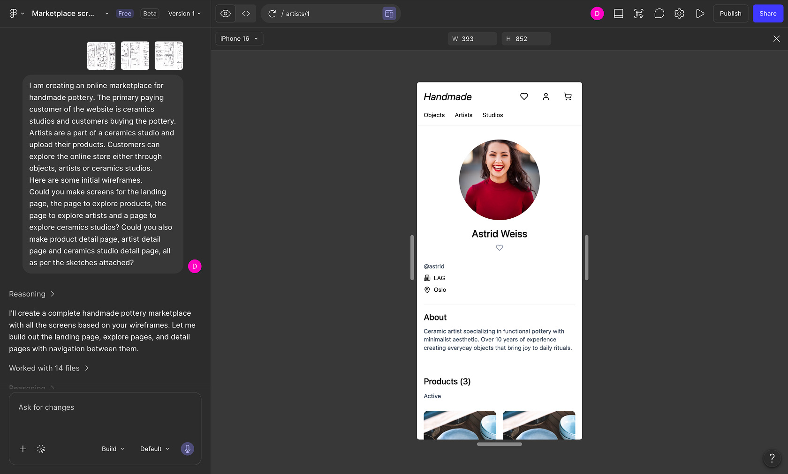
Turning the sketches into interactive prototypes using AI - Figma Make
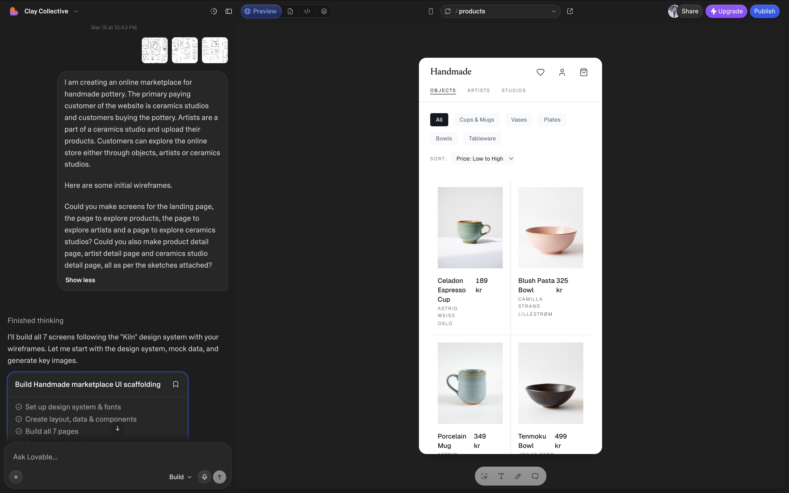
Turning the sketches into interactive prototypes using AI - Lovable
Perfecting the look and feel:
Choosing a visual direction
As this project is very sensitive to aesthetics, it was important for users to see exactly what the platform might look like.
Therefore, the prototype was remade in Figma, from scratch, with all the visual decisions made with intent.
Figma prototype
Experience the Figma prototype here: Figma prototype
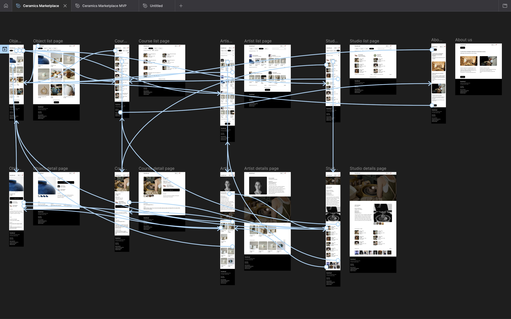
Doing things properly - making a formal Figma prototype with intentional visual and interaction design choices
MVP:
All the bells and whistles
Adhering to all the wishes of end users caused the scope to grow substantially.
Therefore, the need for scoping down to an MVP became obvious.
Hyperlocal marketplace
In ideation workshops to simplify the marketplace, an amazing new idea came up. This platform should be a hyperlocal marketplace, with exchange of objects happening in person.
This way, the need for online payments, shipping, return and refunds all disappeared. The platform would act as a place where customers and artists could connect, and then meet in person.
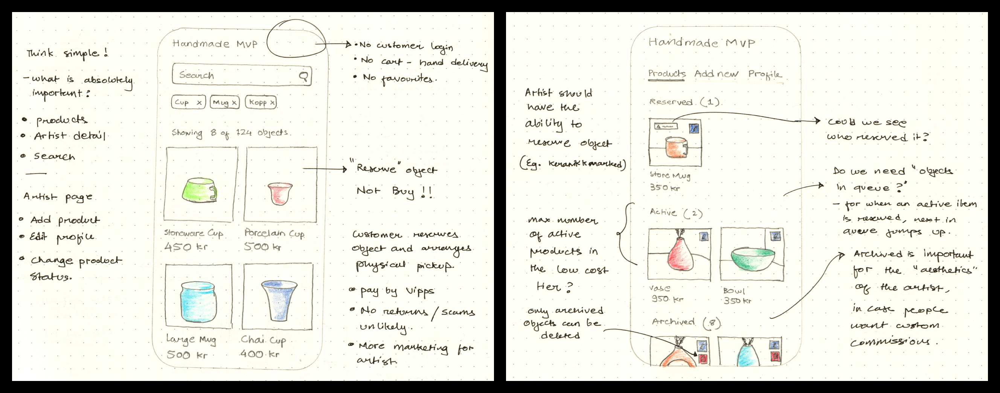
Reframing the problem statement and coming up with a concept for the MVP
Reframing:
Reevaluating the initial idea
The initial idea was a one stop shop for all handmade ceramics. It evolved into a social enterprise - an artist focused platform, very local in nature.
As an analogy, if Handmud was a shop in a city, artists would rent a shelf. The rent for the shelf would be fixed, while artist gets to keep all the profits from the sale of the items.
Next iteration of prototypes
With the updated frame in mind, a new version of the MVP prototype was made.
This prototype was made with an intention to validate if the concept of hyperlocal ceramics market would make sense to the artists and customers.
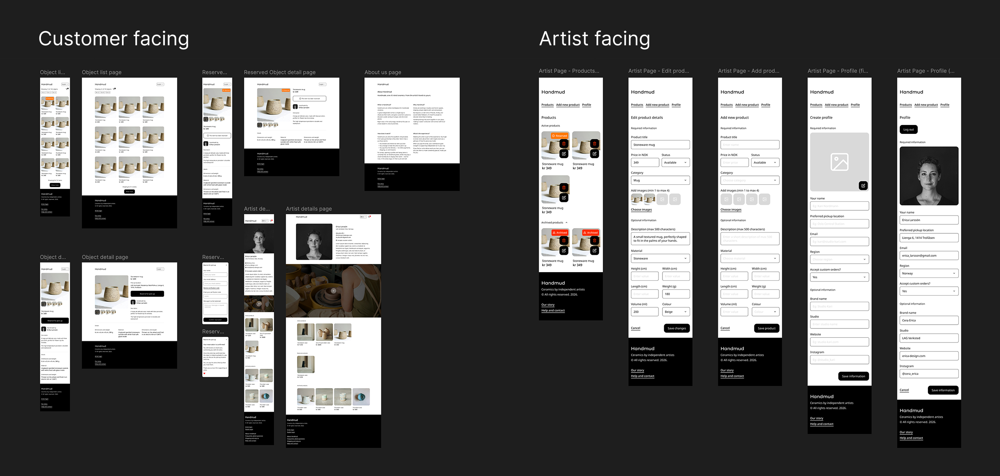
Building a high fidelity reference in Figma, after validation of MVP sketches
Functional prototype:
Almost real
To make fast wide testing possible, the Figma MVP prototype was converted into a functional prototype using Emergent AI (Claude).
The prototype was an almost fully functional website, ready to test. Once the concept was fully validated, it was time to begin coding the real thing.
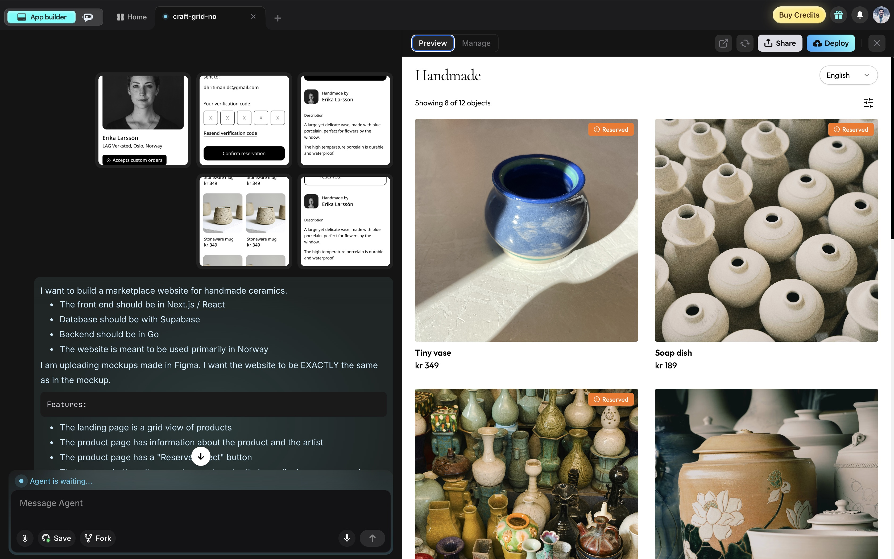
Turning the Figma reference into a functional prototype for real world testing, using Emergent AI
Building the marketplace:
AI is not good enough
While AI was extremely valuable to supercharge the testing and validation parts of the process, just a glance at the code of the functional prototype proved that the code is nowhere near production quality.
I was going through The Odin Project on the side to learn frontend web development and decided to code the frontend myself as a learning exercise.
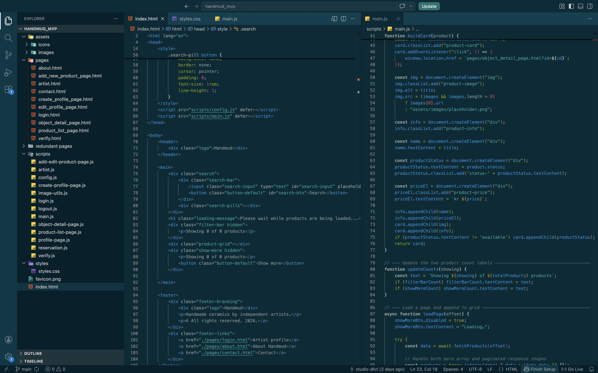
Redoing the website experience from scratch with production quality code, without AI
From idea to reality:
Design + Code = Magic
It was extremely empowering to develop the website frontend myself, while learning how to code on the side. AI is great at empowering designers to bring their digital ideas to life, but nothing beats the reliability that comes with learning how to code.
At this point, the platform also got some branding love and we renamed it to Handmud.
A real project
Handmud exists and artists are beginning to sign up. Artists find it surprisingly easy and delightful to use.
Try the website for yourself. And if you happen to make ceramics, why not make an artist profile?
Handmud.com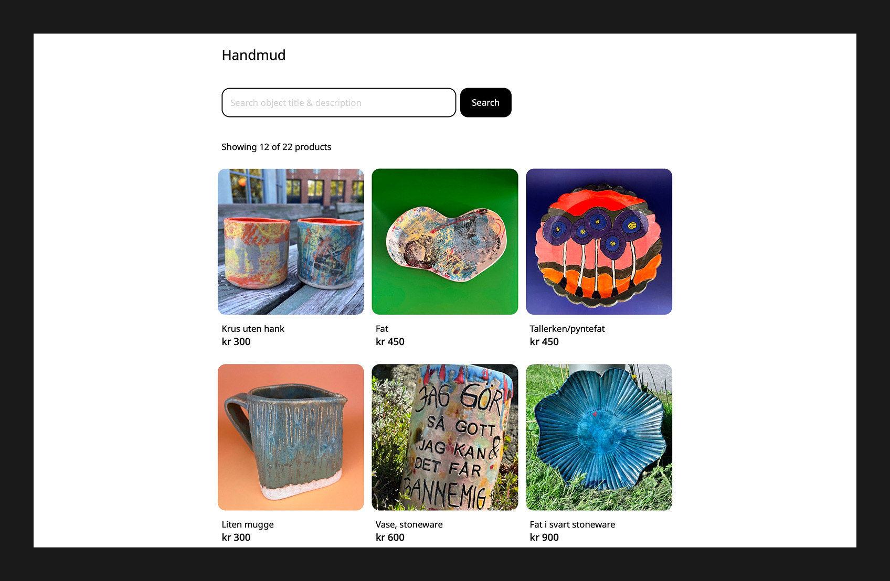
Object list - customer facing landing page
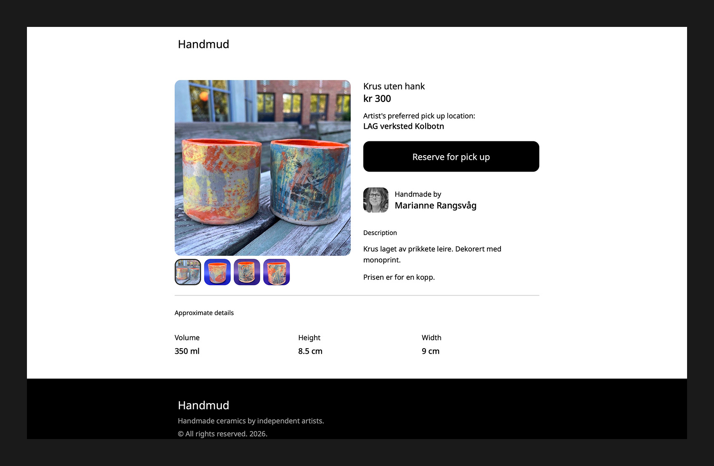
Object details
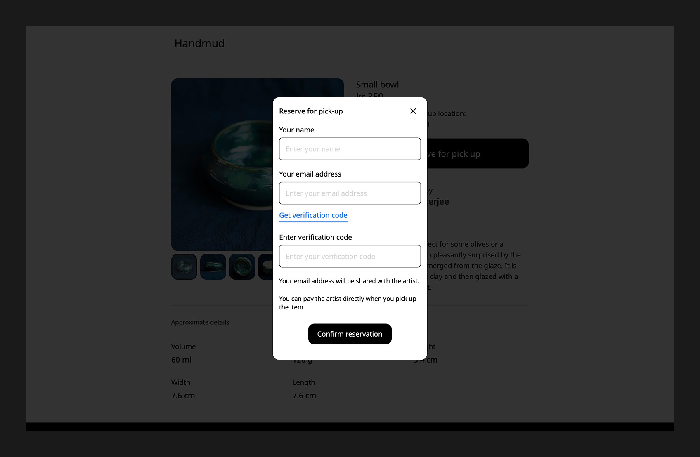
Reservation form
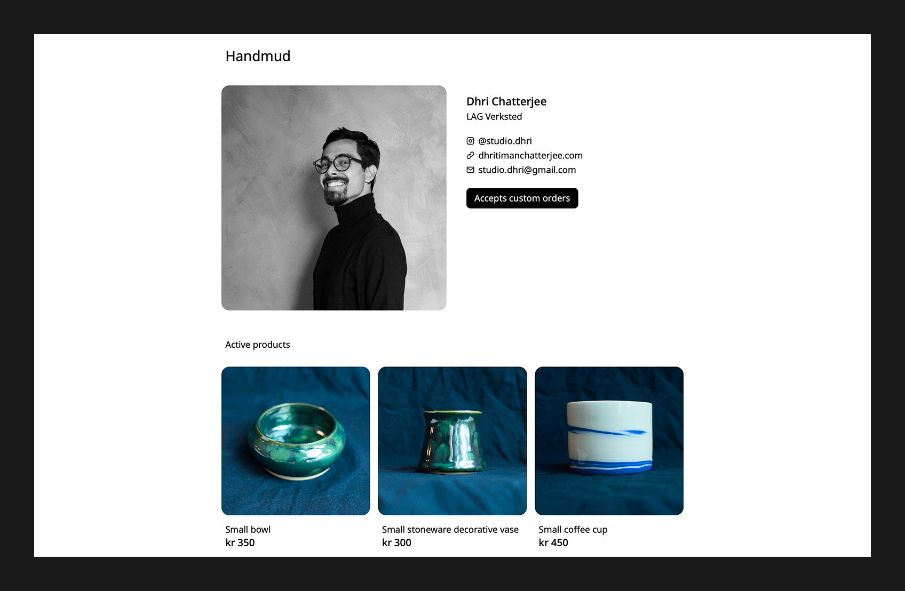
Artist details
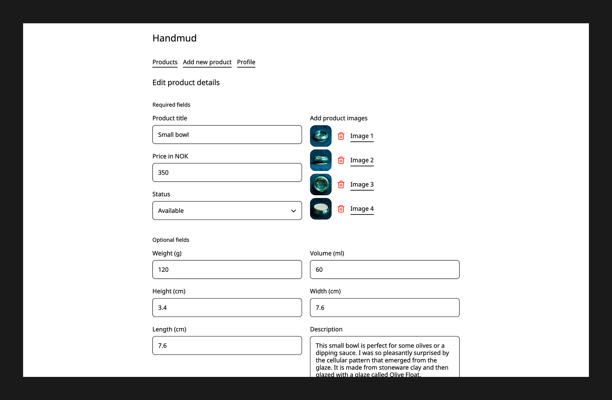
Edit product details - artist facing page